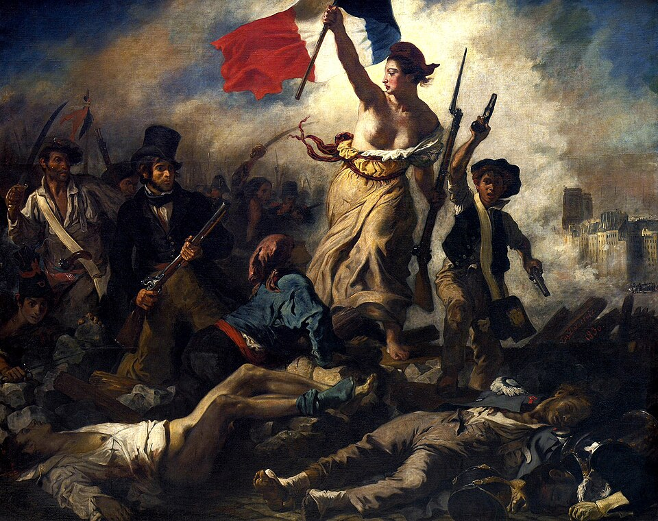
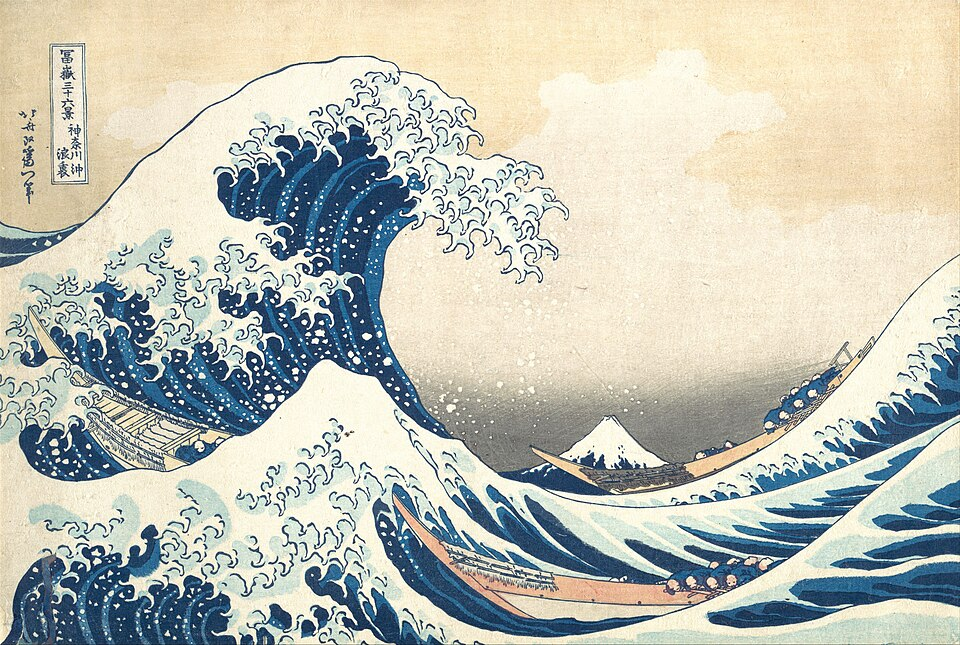
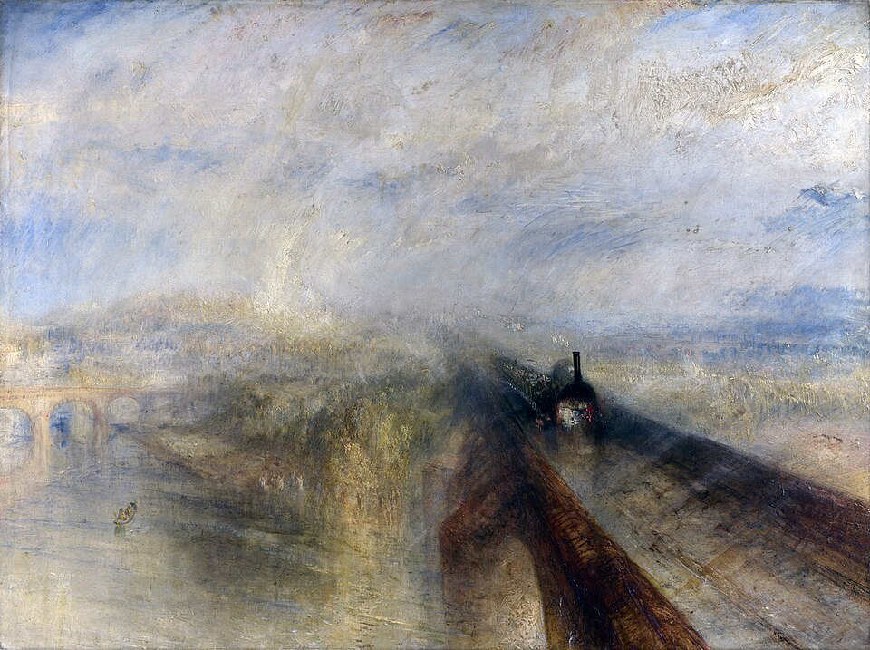
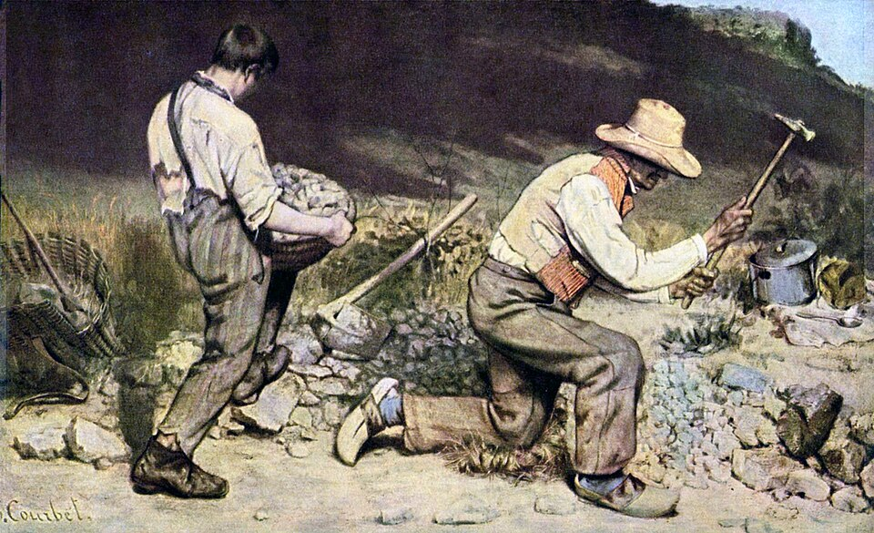
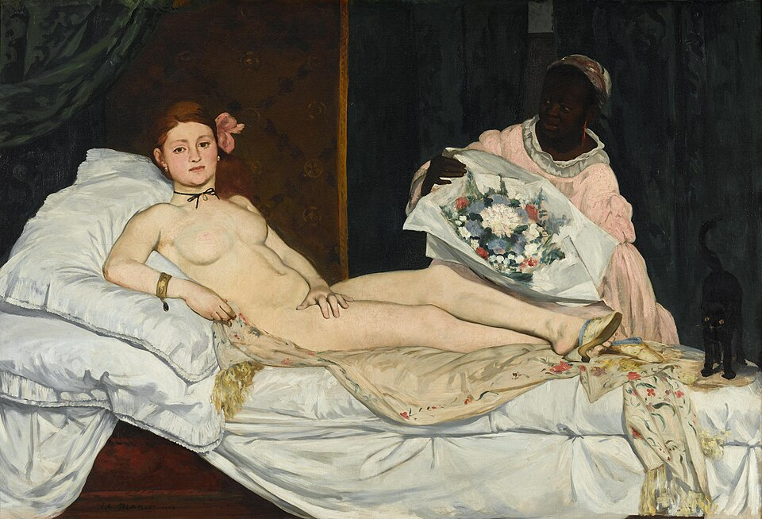
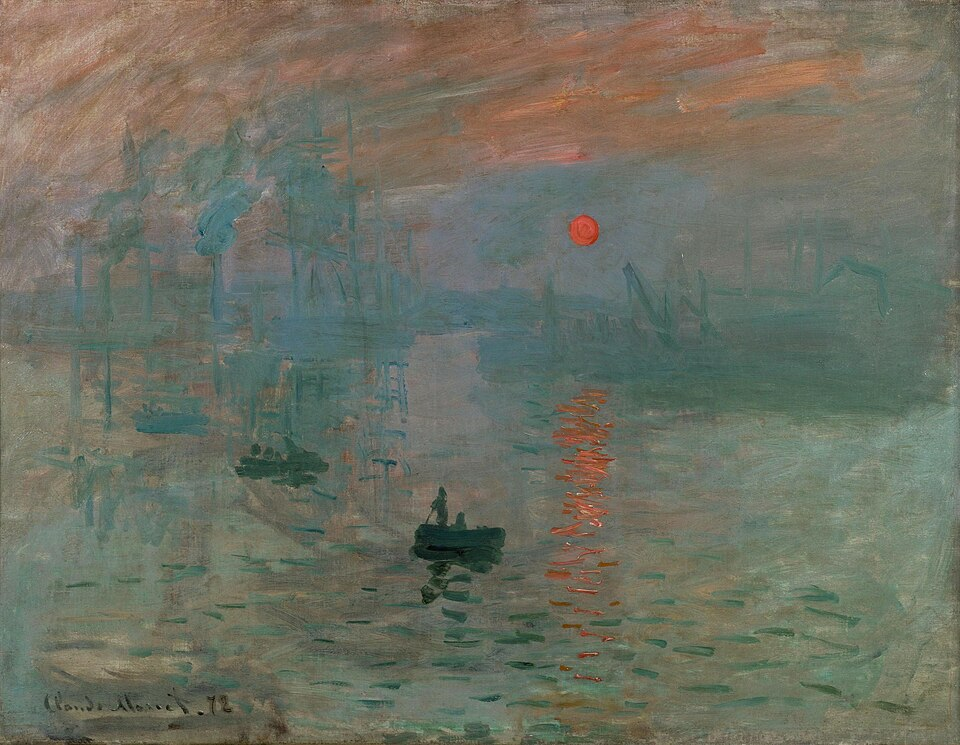
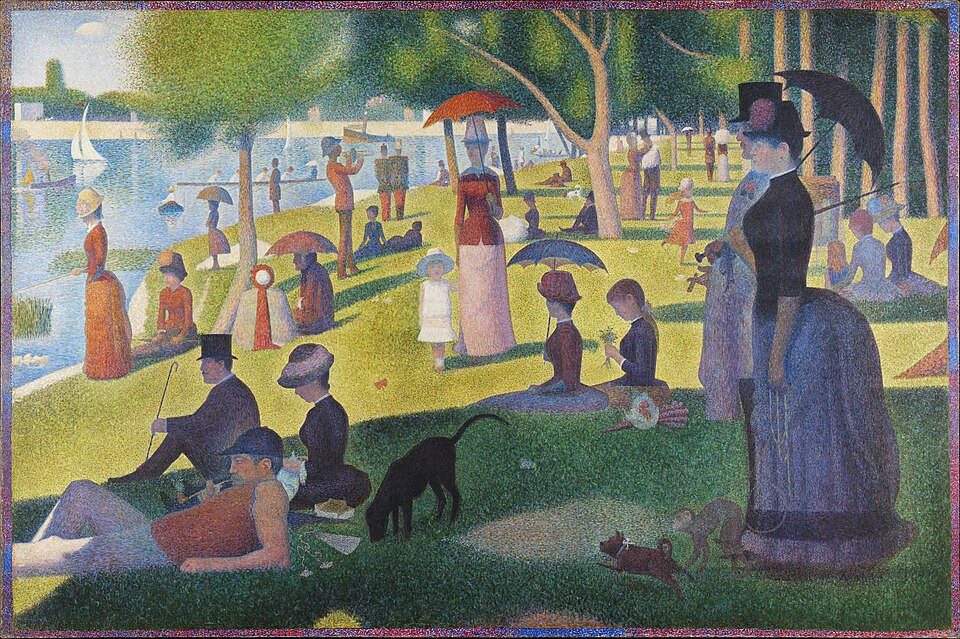
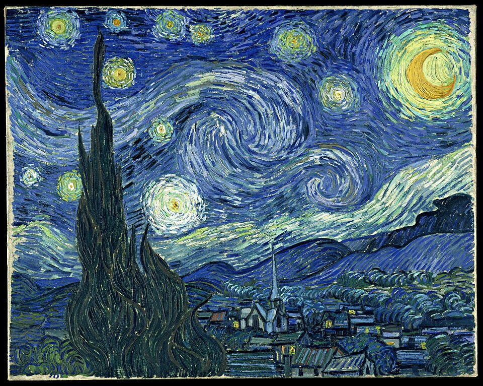
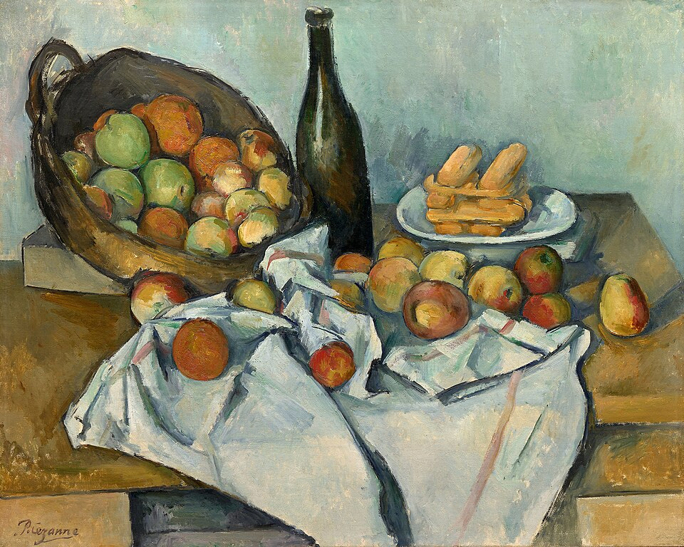

Home › Eras › The 19th century
The 19th century
Revolution, industrialization and photography pushed art through a rapid series of 'isms'.
Neoclassicism and Romanticism
David painted ancient virtue for a revolutionary age. Goya, Delacroix, Turner and Friedrich answered with emotion, nature and the sublime.
Realism
Courbet and Manet painted modern life, not heroes and myths.
Impressionism (1870s)
Monet, Renoir, Morisot and others painted outdoors, capturing fleeting light with visible brush marks. Their independent exhibitions started in 1874.
Post-Impressionism
Cézanne, Van Gogh, Gauguin and Seurat each took Impressionism in a different direction: structure, emotion, symbol and science.
Photography and Japan
Photography (1839) freed painters from strict likeness, and Japanese woodblock prints, newly arrived in Europe, changed composition and color. Art Nouveau emerged in the 1890s.
Key works
 1793
1793The Death of Marat
Jacques-Louis David · Painting
 1814
1814The Third of May 1808
Francisco Goya · Painting

1830Liberty Leading the People
Eugène Delacroix · Painting

c. 1831The Great Wave off Kanagawa
Katsushika Hokusai · Print & Drawing

1844Rain, Steam and Speed
J. M. W. Turner · Painting

1849The Stone Breakers
Gustave Courbet · Painting

1863Olympia
Édouard Manet · Painting

1872Impression, Sunrise
Claude Monet · Painting

1884–86A Sunday Afternoon on the Island of La Grande Jatte
Georges Seurat · Painting

1889The Starry Night
Vincent van Gogh · Painting
 1887–89
1887–89Eiffel Tower
Gustave Eiffel's company · Architecture

c. 1893The Basket of Apples
Paul Cézanne · Painting
Movements and styles
Neoclassicism
A return to the clarity, order and moral seriousness of antiquity, boosted by the discoveries at Pompeii.
~1800–1850Romanticism
Emotion, imagination and the awe of nature over reason and order.
~1840s–1880sRealism
Depicting ordinary people and daily life honestly, without idealization. Also used for later works of everyday modern life.
~1650–1900Ukiyo-e
Japanese woodblock prints of 'the floating world': actors, landscapes, beauties. A major influence on European artists.
~1870–1886Impressionism
Painting the effect of light and atmosphere with short, visible brushstrokes, often outdoors.
~1885–1905Post-Impressionism
Artists who built on Impressionism but sought more structure, emotion or symbol.
Artists
Jacques-Louis David · Francisco Goya · Eugène Delacroix · Katsushika Hokusai · J. M. W. Turner · Gustave Courbet · Édouard Manet · Claude Monet · Georges Seurat · Vincent van Gogh · Gustave Eiffel · Paul Cézanne